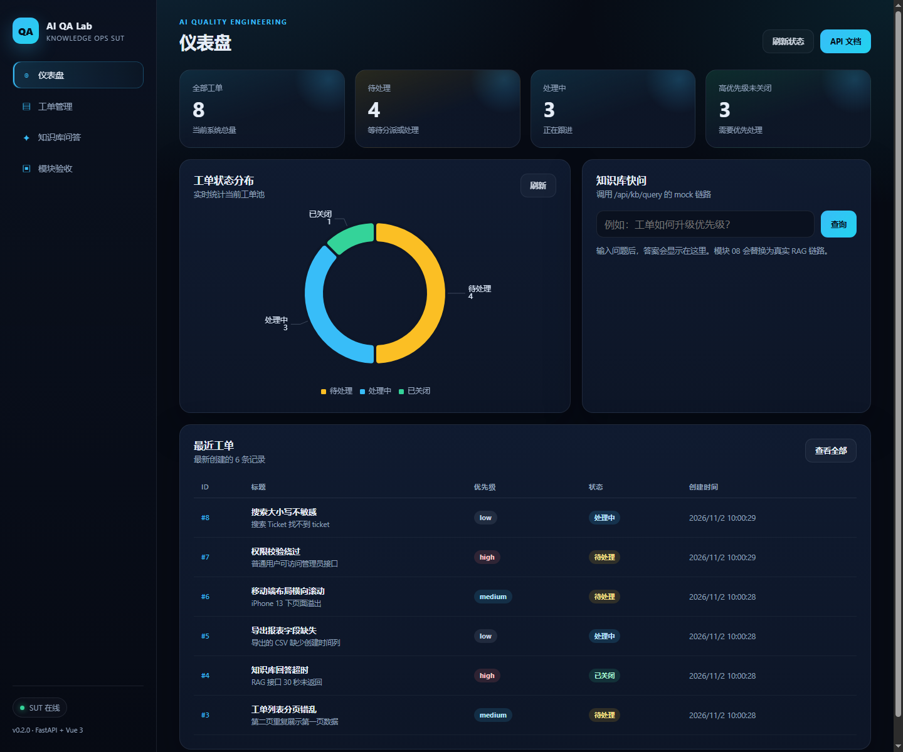
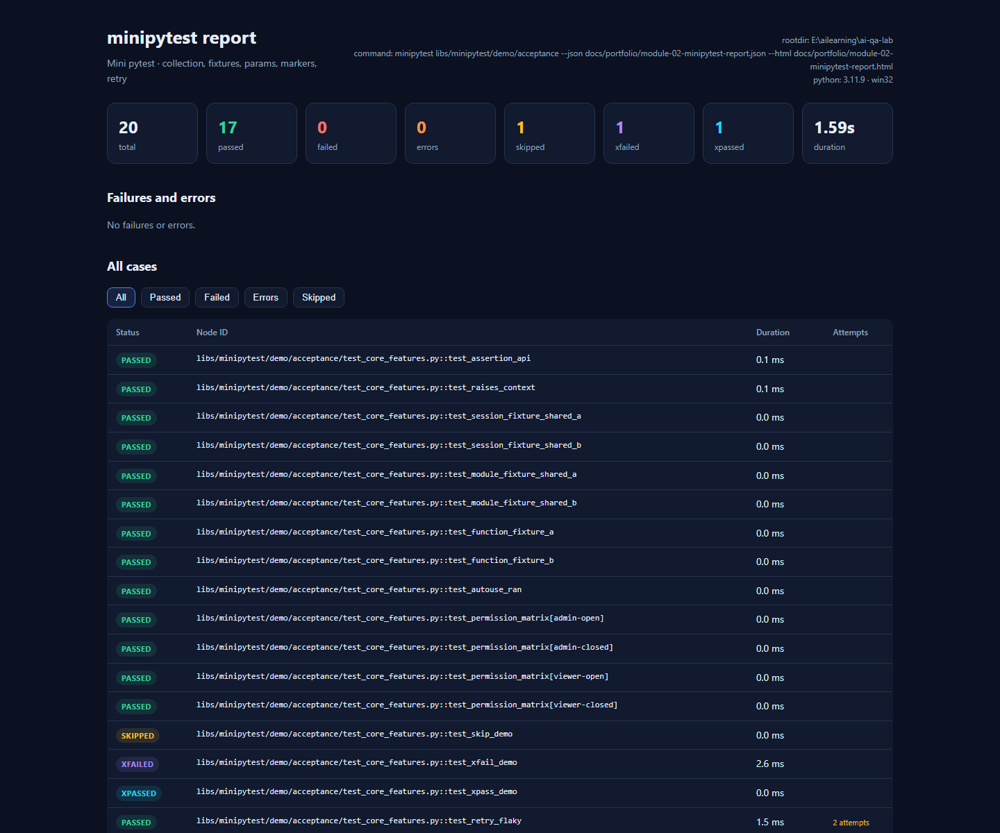
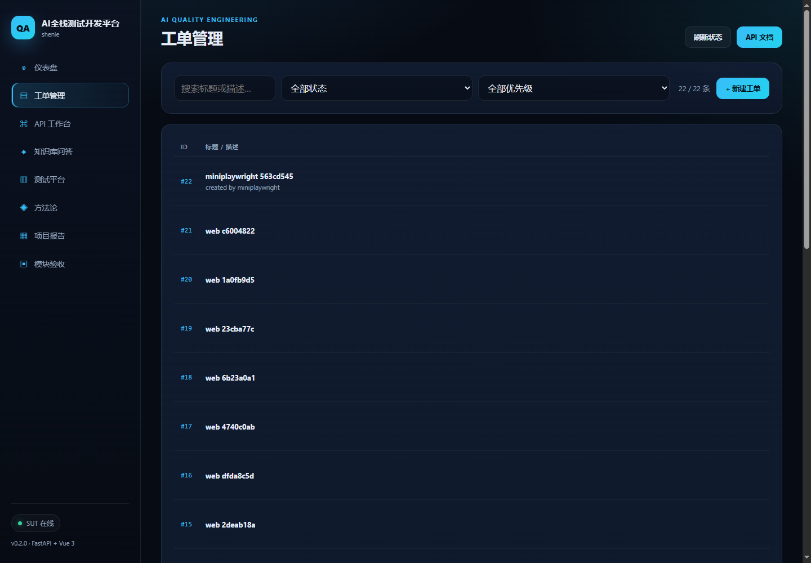
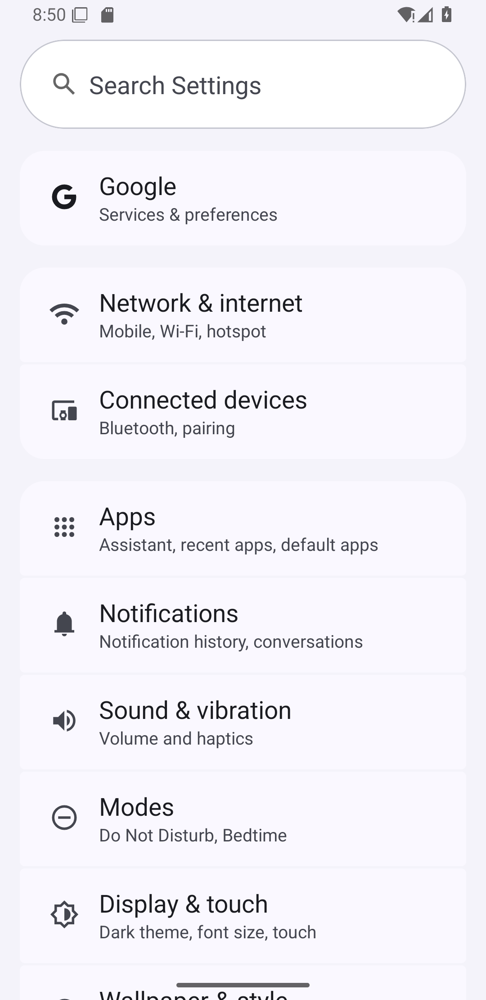
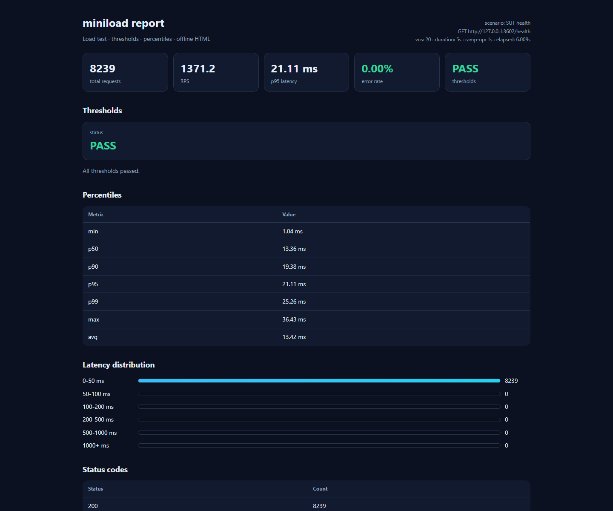
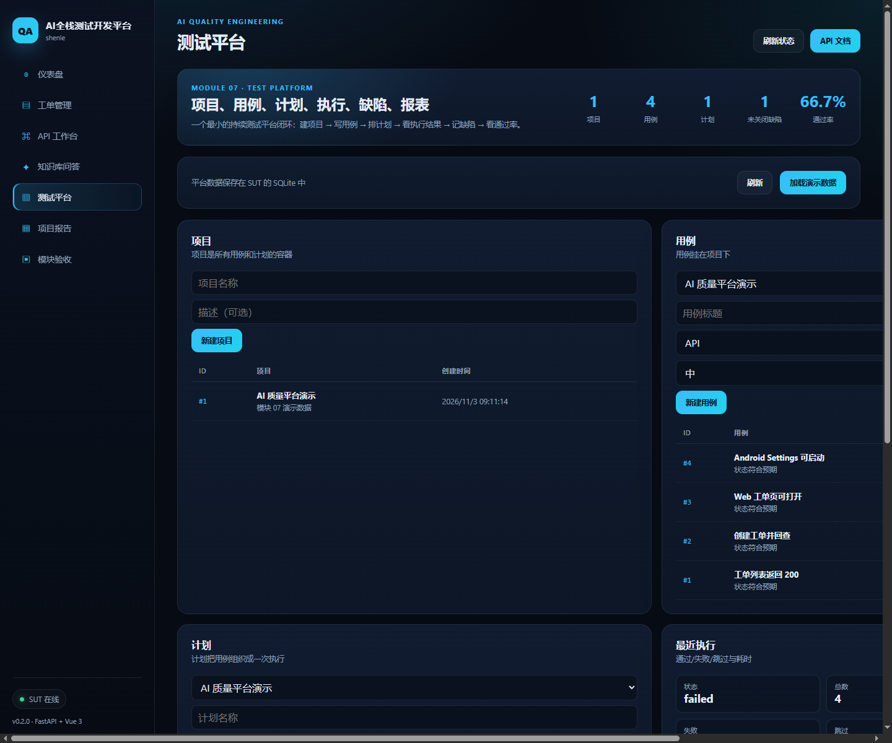
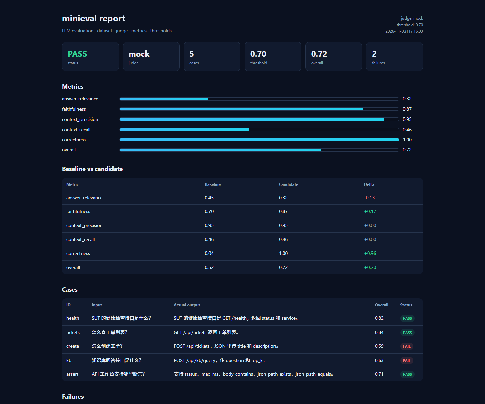
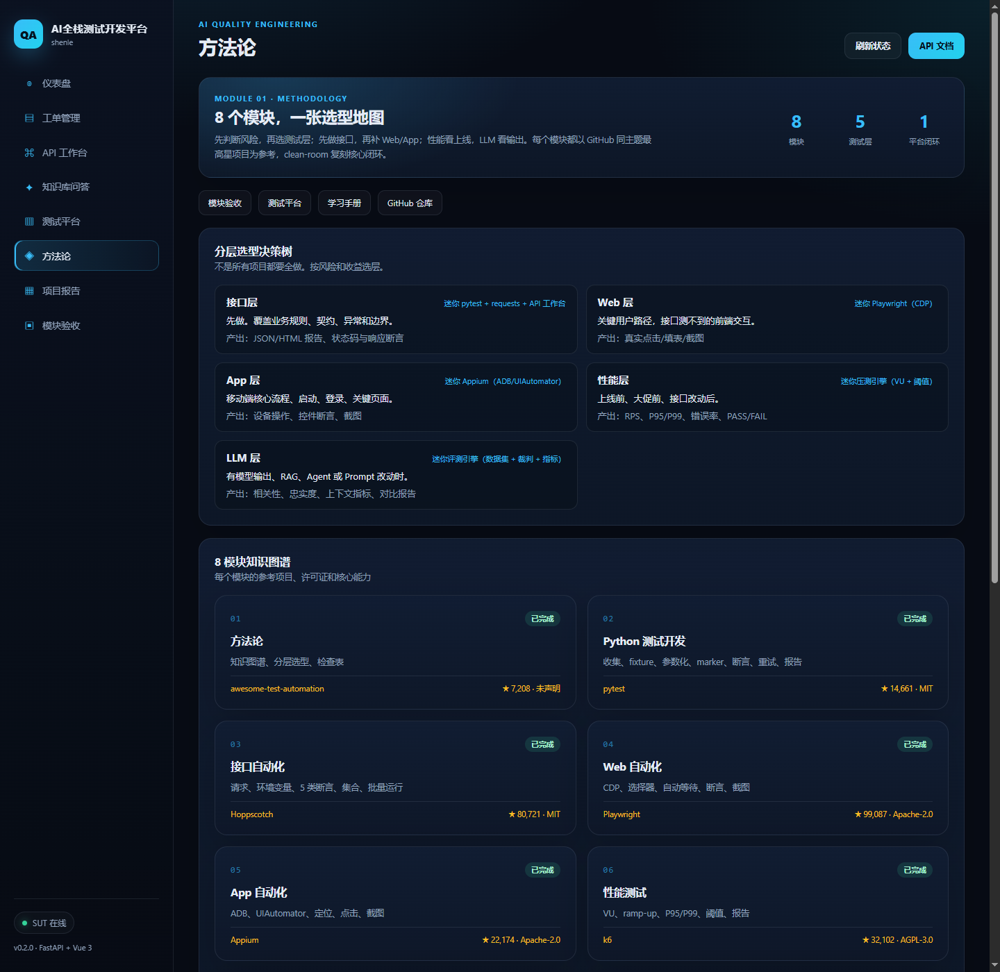
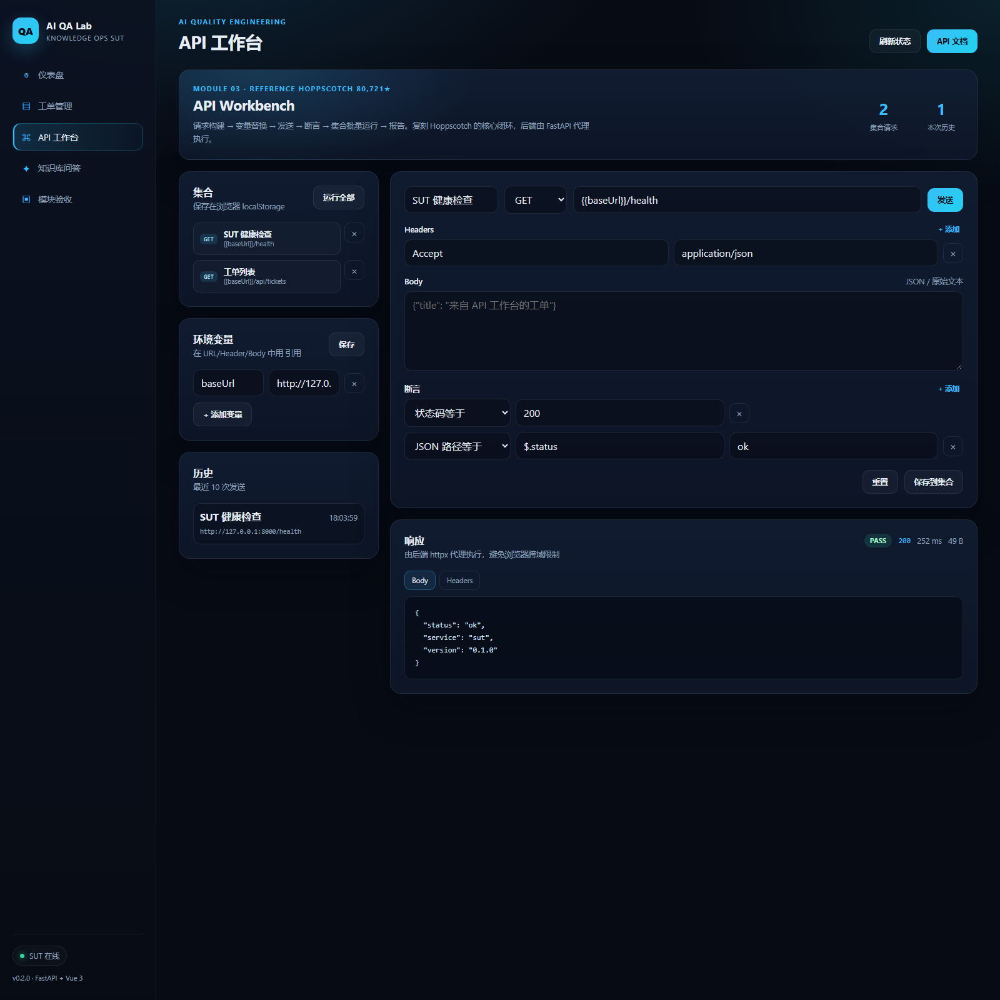

PROJECT REPORT · 2026-11-03
这份报告回答：我做了什么、原理是什么、步骤是什么、最终成果是什么，以及它能否脱离本地在公网运行。
每一步都有可验证产物，不是只写文档。
建立 monorepo、CLAUDE.md、目录约定、Python 3.11 环境。
FastAPI + SQLAlchemy + SQLite：健康检查、工单 CRUD、知识库 mock，6 个 pytest 通过。
创建 shenle2019/ai-qa-lab；HTTPS 被阻断后改用 SSH 443 推送；GitHub Actions 跑 pytest。
suites/api 黑盒测试：健康检查、契约、CRUD、异常/边界、知识库 mock，22 个用例通过。
确定“最高星项目 + 完整闭环 + 验收网页”规则，产出 8 模块选型矩阵。
Vue 3 + Vite + Pinia + Router + ECharts，含仪表盘、工单、知识库、API 工作台、项目报告、模块验收。
以 Hoppscotch（80,721★）为参考，复刻 API 工作台：请求、环境变量、5 类断言、集合、批量运行与报告。
以 pytest（14,661★）为参考，自研迷你 pytest：收集、fixture、参数化、marker、断言内省、重试、JSON/HTML 报告；33 元测试 + 20 演示。
以 Playwright（99,087★）为参考，自研 CDP 浏览器自动化：启动、选择器、自动等待、断言、截图；6 元测试 + 5 个 SUT UI 用例。
以 Appium（22,174★）为参考，自研 ADB/UIAutomator 客户端：元素定位、点击、等待、截图；5 元测试 + 3 个 Settings 用例。
以 k6（32,102★）为参考，自研压测引擎：VU 并发、ramp-up、P95/P99、阈值、离线报告；8239 次请求，1371 RPS，P95 21ms。
以 MeterSphere（13,600★）为参考，测试平台闭环：项目、用例、计划、执行、缺陷、报表；17 个平台 API，支持导入迷你 pytest 报告。
以 DeepEval（19,242★）为参考，自研 LLM 评测：数据集、Mock/DeepSeek 裁判、相关性/忠实度/上下文指标、阈值、对比报告；0.52→0.72。
以 awesome-test-automation（7,208★）为参考，方法论页面：8 模块知识图谱、5 层选型决策树、7 步协作流程、10 条检查表。
一条数据流，三个层次。
Browser (Vue 3 SPA)
├─ 仪表盘 / 工单 / 知识库 / API 工作台 / 项目报告
└─ fetch /api/*
│
▼
FastAPI (apps/sut/backend)
├─ /health, /api/tickets, /api/kb/query
├─ /api/workbench/send, /api/workbench/run
└─ /ui ← Vue 构建产物（同源托管）
│
▼
SQLAlchemy → SQLite
从零到验收的完整命令。
cd /e/ailearning/ai-qa-lab bash scripts/start_sut.sh
./.venv/Scripts/python.exe -m pytest \ apps/sut/backend suites/api \ libs/minipytest/tests -q ./.venv/Scripts/python.exe -m libs.minipytest \ libs/minipytest/demo/acceptance -v
/ui/ 仪表盘 /ui/#/tickets 工单管理 /ui/#/workbench API 工作台 /ui/#/report 项目报告 /ui/#/portfolio 模块验收
docker build -t ai-qa-lab . docker run -p 8000:8000 ai-qa-lab # Render Blueprint: render.yaml
代码、页面、测试、文档、部署配置。
| 产物 | 位置 | 状态 |
|---|---|---|
| SUT 后端 | apps/sut/backend | 可运行，9 个接口（7 业务 + 2 工作台） |
| Vue 控制台 | apps/sut/frontend | 6 个页面，已构建 |
| 接口套件 | suites/api | 56 tests passing（含 29 个 CRUD） |
| 迷你 pytest | libs/minipytest | 33 元测试 + 20 演示；离线 HTML 报告 |
| 迷你 Playwright | libs/miniplaywright | 6 元测试 + 33 个 SUT UI 用例 |
| 迷你 Appium | libs/miniappium | 29 元测试 + 3 个 Settings 用例 |
| 迷你压测 | libs/miniload | 5 元测试；SUT 8239 请求，P95 21ms |
| 测试平台 | /ui/#/platform | 项目/用例/计划/执行/缺陷/报表；38 backend tests |
| CRUD 测试报告 | test-report-2026-11-03.html | 107 个新增用例 |
| LLM 评测 | libs/minieval | 5 元测试；5 条数据，0.52→0.72 |
| 方法论 | /ui/#/methodology | 8 模块图谱 + 5 层选型 + 检查表 |
| API 工作台 | /ui/#/workbench | 闭环可用 |
| 复刻矩阵 | docs/requirements/module-matrix.md | 8 模块选型完成 |
| 验收材料 | docs/portfolio | 报告 + 截图 |
| CI | .github/workflows/ci.yml | GitHub Actions |
| 容器部署 | Dockerfile / render.yaml | 配置就绪 |









能，但要区分“静态报告”和“完整后端”。
当前决策：先本地开发，等 8 个模块全部完成后再统一上云；Docker / HF / Render 配置保留在仓库，不阻塞开发。
| 方式 | 能运行什么 | 是否需要账号 | 当前状态 |
|---|---|---|---|
| GitHub Pages | 项目报告、截图、文档 | 已有 GitHub | 本页已公网可访问 |
| Render Docker | 完整 SUT + Vue + API 工作台 | 需要 Render 账号 | 配置已就绪，待平台授权 |
| Hugging Face Spaces | 完整 SUT + Vue + API 工作台 | 需要 HF 账号 | 备选方案 |
| 本地 | 全部功能 | 无 | 已运行 |
仓库已包含 Dockerfile、render.yaml、.dockerignore。容器启动时 SEED_DEMO=1 自动写入演示工单；SQLite 在免费平台重启后会重置，适合演示。
Hugging Face Spaces 配置在 deploy/huggingface/：创建 Docker Space 后上传 README.md 和 Dockerfile 即可；Dockerfile 会在构建时克隆本仓库、构建前端并启动 FastAPI。
2026-11-03 验收时问的 5 个问题。
学习页原来叫 “AI QA Lab”，现在改成 “AI全栈测试开发平台-shenle”。改的是浏览器标签、页面顶部和一级标题，内容不变。控制台侧边栏也同步换成了这个显示名，仓库名 ai-qa-lab 没变。
SUT 就是被测系统（System Under Test）。代码在 apps/sut/backend（FastAPI + SQLite）和 apps/sut/frontend（Vue3）。启动后看两个地方：/ui/ 是用户界面，/docs 是接口文档，能直接点 “Try it out” 发请求。
现在实际有 9 个 HTTP 接口：健康检查、工单列表、创建工单、查单个工单、更新工单、删除工单、知识库问答，加 2 个工作台接口。之前报告写 7 个，是旧口径，已更正。
参考 Hoppscotch（80,721 星），一个开源的 Postman 类 API 工具。我们没复制源码，只复刻核心闭环：发请求、环境变量、5 种断言、集合保存、批量运行、报告。入口是 /ui/#/workbench。v0.1 不做 GraphQL、WebSocket、脚本和团队协作。
参考 awesome-test-automation（7,208 星），一个测试工具清单和地图，不是可运行程序。我们用它来确定 8 个模块、每个模块的最高星参考项目和复刻规则。产物是 docs/requirements/module-matrix.md 和 CLAUDE.md 里的规则。模块 01 排在最后，因为它要把整个项目总结成知识地图和选型决策页。
参考 MeterSphere（13,600 星），一个持续测试平台，管理项目、用例、计划、执行、缺陷、报表。现在有 Vue 控制台 + FastAPI 后端，能看仪表盘、工单、知识库、API 工作台、报告、模块验收，所以叫“控制台雏形”。还缺用例管理、测试计划、执行历史、缺陷跟踪、权限和 CI 集成。